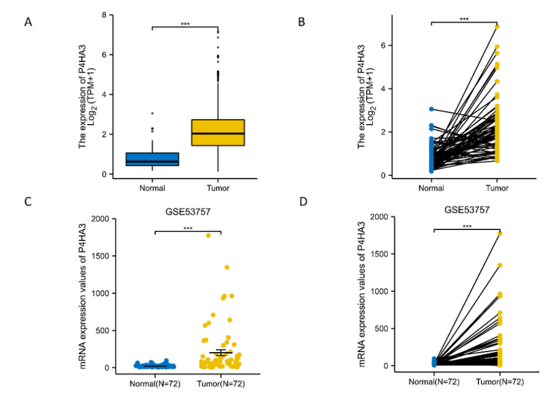

P4HA3 (prolyl 4-hydroxylase subunit alpha-3) is the third catalytic alpha-subunit isoform of collagen prolyl 4-hydroxylase (C-P4H). The active enzyme is an alpha2-beta2 heterotetramer in which the two catalytic alpha subunits combine with two beta subunits that are identical to protein disulfide isomerase (PDI/P4HB). P4HA3 is an endoplasmic reticulum lumenal, Fe(II)- and 2-oxoglutarate-dependent dioxygenase that, using L-ascorbate as a cofactor and molecular oxygen as co-substrate, hydroxylates proline residues in -X-Pro-Gly- triplets of procollagen and related proteins to form trans-4-hydroxyproline (consuming 2-oxoglutarate and producing succinate and CO2). 4-hydroxyproline formation is essential for folding and thermal stability of the collagen triple helix. The alpha-3 isoenzyme has catalytic properties similar to the type I and type II C-P4Hs but with intermediate peptide-substrate binding properties, and its mRNA is expressed broadly but at much lower levels than the alpha(I)/alpha(II) isoforms, being most abundant in placenta, liver, and fetal skin and detectable in vascular smooth muscle and the fibrous cap of atherosclerotic lesions.
| GO Term | Evidence | Action | Reason |
|---|---|---|---|
|
GO:0004656
procollagen-proline 4-dioxygenase activity
|
IBA
GO_REF:0000033 |
ACCEPT |
Summary: Phylogenetic (IBA) assignment of the core collagen prolyl 4-hydroxylase activity, consistent with the direct experimental EXP evidence for P4HA3 and with conserved catalytic residues across the P4HA family.
Reason: This is the defining core molecular function of P4HA3; the IBA inference agrees with the experimental characterization of the recombinant alpha(III) enzyme.
Supporting Evidence:
PMID:14500733
led to the formation of an active enzyme that hydroxylated collagen chains and a collagen-like peptide and appeared to be an [alpha(III)]2 beta 2 tetramer
|
|
GO:0016222
procollagen-proline 4-dioxygenase complex
|
IBA
GO_REF:0000033 |
ACCEPT |
Summary: P4HA3 is the catalytic alpha subunit of the alpha2-beta2 collagen prolyl 4-hydroxylase tetramer, in which the beta subunit is PDI. Membership in the prolyl 4-hydroxylase complex is the correct cellular-component assignment.
Reason: Directly supported; the recombinant alpha(III) assembles with PDI into an [alpha(III)]2-beta2 tetramer, i.e. the procollagen-proline 4-dioxygenase complex.
Supporting Evidence:
PMID:14500733
The vertebrate enzymes are alpha 2 beta 2 tetramers, the beta-subunit being identical to protein-disulfide isomerase (PDI)
|
|
GO:0004656
procollagen-proline 4-dioxygenase activity
|
IEA
GO_REF:0000120 |
ACCEPT |
Summary: Electronic assignment of the core dioxygenase activity from the EC/Rhea mapping (EC 1.14.11.2; RHEA:18945), redundant with the experimental and IBA evidence.
Reason: Correct core molecular function; the EC/Rhea reaction matches the curated catalytic activity of P4HA3.
Supporting Evidence:
file:human/P4HA3/P4HA3-uniprot.txt
EC=1.14.11.2 {ECO:0000269|PubMed:14500733}
|
|
GO:0005506
iron ion binding
|
IEA
GO_REF:0000002 |
ACCEPT |
Summary: P4HA3 binds one Fe(2+) ion per subunit as the catalytic metal of its Fe(II)/2-oxoglutarate-dependent dioxygenase reaction; the InterPro-based electronic assignment is accurate.
Reason: Iron coordination (residues 440, 442, 510) is essential for catalysis; correct cofactor molecular function supporting the core activity.
Supporting Evidence:
file:human/P4HA3/P4HA3-uniprot.txt
Binds 1 Fe(2+) ion per subunit
|
|
GO:0005783
endoplasmic reticulum
|
IEA
GO_REF:0000120 |
ACCEPT |
Summary: Collagen prolyl 4-hydroxylation occurs in the ER; the electronic ER localization is consistent with the UniProt subcellular location and the secretory-pathway signal peptide.
Reason: Correct compartment; the more specific ER lumen term is also annotated.
Supporting Evidence:
file:human/P4HA3/P4HA3-uniprot.txt
SUBCELLULAR LOCATION: Endoplasmic reticulum lumen
|
|
GO:0005788
endoplasmic reticulum lumen
|
IEA
GO_REF:0000044 |
ACCEPT |
Summary: The C-P4H tetramer resides and acts in the ER lumen, the site of procollagen folding; this is the precise correct compartment for P4HA3.
Reason: Correct and specific subcellular location, supported by the UniProt subcellular location and Reactome curation.
Supporting Evidence:
file:human/P4HA3/P4HA3-uniprot.txt
SUBCELLULAR LOCATION: Endoplasmic reticulum lumen
|
|
GO:0016705
oxidoreductase activity, acting on paired donors, with incorporation or reduction of molecular oxygen
|
IEA
GO_REF:0000002 |
ACCEPT |
Summary: P4HA3 is a 2-oxoglutarate/Fe(II)-dependent dioxygenase that incorporates oxygen using paired donors (prolyl substrate and 2-oxoglutarate); this is a correct parent molecular function of the specific procollagen-proline 4-dioxygenase activity.
Reason: Accurate general oxidoreductase chemistry; the specific GO:0004656 captures the core function more informatively, but this parent term is not wrong.
Supporting Evidence:
file:human/P4HA3/P4HA3-uniprot.txt
Reaction=L-prolyl-[collagen] + 2-oxoglutarate + O2 = trans-4-hydroxy-L- prolyl-[collagen] + succinate + CO2
|
|
GO:0031418
L-ascorbic acid binding
|
IEA
GO_REF:0000002 |
ACCEPT |
Summary: L-ascorbate (vitamin C) is a required cofactor of collagen prolyl 4-hydroxylases, maintaining the iron in the reduced state; the electronic assignment is accurate (KM 370 uM for L-ascorbate).
Reason: Correct cofactor-binding molecular function supporting the core dioxygenase activity.
Supporting Evidence:
file:human/P4HA3/P4HA3-uniprot.txt
Name=L-ascorbate
|
|
GO:0005515
protein binding
|
IPI
PMID:25416956 A proteome-scale map of the human interactome network. |
KEEP AS NON CORE |
Summary: Bare protein binding derived from a large-scale binary (Y2H) interactome reference map. The captured partners are systematic-screen hits unrelated to the physiological PDI/collagen interactions, and the term is uninformative.
Reason: Real IntAct interactome captures but uninformative bare protein binding; not the functional alpha2-beta2/PDI interaction, so not elevated to core (per curation guidance).
Supporting Evidence:
PMID:25416956
a systematic map of ?14,000 high-quality human binary protein-protein interactions
|
|
GO:0005515
protein binding
|
IPI
PMID:26871637 Widespread Expansion of Protein Interaction Capabilities by ... |
KEEP AS NON CORE |
Summary: Bare protein binding from a high-throughput interactome screen examining alternative splicing isoform interactions; uninformative for P4HA3's catalytic function.
Reason: Valid high-throughput interaction capture but uninformative bare protein binding; does not reflect the core collagen-hydroxylase function.
Supporting Evidence:
file:human/P4HA3/P4HA3-uniprot.txt
Q7Z4N8; O43379: WDR62
|
|
GO:0005515
protein binding
|
IPI
PMID:31515488 Extensive disruption of protein interactions by genetic vari... |
KEEP AS NON CORE |
Summary: Bare protein binding from a high-throughput interactome screen assaying disruption of protein interactions by genetic variants; partners are screen captures unrelated to the core enzymatic function.
Reason: Real interactome capture but uninformative bare protein binding; not a core function.
Supporting Evidence:
file:human/P4HA3/P4HA3-uniprot.txt
Q7Z4N8; P43356: MAGEA2B
|
|
GO:0005515
protein binding
|
IPI
PMID:32296183 A reference map of the human binary protein interactome. |
KEEP AS NON CORE |
Summary: Bare protein binding from the HuRI binary interactome reference map; the large partner list comprises systematic Y2H captures (keratin-associated proteins, MAGE proteins, transcription factors, etc.) not relevant to collagen prolyl 4-hydroxylation.
Reason: Real interactome captures but uninformative bare protein binding; per guidelines, kept non-core rather than elevated or removed.
Supporting Evidence:
file:human/P4HA3/P4HA3-uniprot.txt
Q7Z4N8; O14964: HGS
|
|
GO:0004656
procollagen-proline 4-dioxygenase activity
|
EXP
PMID:14500733 Identification and characterization of a third human, rat, a... |
ACCEPT |
Summary: Direct experimental demonstration that recombinant human alpha(III), coexpressed with PDI, forms an active enzyme that hydroxylates collagen chains and a collagen-like peptide. This is the founding biochemical characterization establishing P4HA3's core function.
Reason: Core molecular function with direct experimental (EXP) support; the recombinant enzyme hydroxylated collagen substrates with catalytic properties similar to the type I/II C-P4Hs.
Supporting Evidence:
PMID:14500733
led to the formation of an active enzyme that hydroxylated collagen chains and a collagen-like peptide and appeared to be an [alpha(III)]2 beta 2 tetramer
|
|
GO:0005788
endoplasmic reticulum lumen
|
TAS
Reactome:R-HSA-1650808 |
ACCEPT |
Summary: Reactome curation of P4HA3 in the ER lumen, where the collagen prolyl 4-hydroxylase reaction occurs; consistent with the UniProt subcellular location.
Reason: Correct and specific compartment; redundant with the IEA ER lumen annotation.
Supporting Evidence:
file:human/P4HA3/P4HA3-uniprot.txt
SUBCELLULAR LOCATION: Endoplasmic reticulum lumen
|
|
GO:0005788
endoplasmic reticulum lumen
|
TAS
Reactome:R-HSA-9918779 |
ACCEPT |
Summary: Reactome curation of ER-lumen localization in the context of proline hydroxylation of a (viral) polyprotein substrate; the compartment assignment for P4HA3 is correct.
Reason: Correct compartment; redundant with other ER lumen annotations.
Supporting Evidence:
file:human/P4HA3/P4HA3-uniprot.txt
SUBCELLULAR LOCATION: Endoplasmic reticulum lumen
|
Q: Does P4HA3-containing C-P4H have a distinct substrate preference (e.g. for particular collagen types or non-collagenous Pro-Gly-containing substrates) that distinguishes it from the alpha(I)- and alpha(II)-containing isoenzymes, given its intermediate peptide-binding properties?
Q: Is the elevated P4HA3 expression in vascular smooth muscle, atherosclerotic fibrous cap, and certain tumors associated with a direct collagen-hydroxylation role in ECM remodeling, or with non-catalytic/contextual functions?
Experiment: Reconstitute recombinant [alpha(III)]2-beta2 (P4HA3/PDI) C-P4H and measure steady-state kinetics and substrate specificity against a panel of collagen-type peptides versus the type I and type II C-P4Hs to define isoenzyme-specific substrate preferences.
Experiment: CRISPR knockout or knockdown of P4HA3 in cells with high endogenous expression (e.g. placental or vascular smooth muscle cells) followed by mass spectrometry quantification of collagen 4-hydroxyproline content to assess its non-redundant contribution to collagen hydroxylation in vivo.
The research report should be a detailed narrative explaining the function, biological processes, and localization of the gene product. Citations should be given for all claims.
You should prioritize authoritative reviews and primary scientific literature when conducting research. You can supplement
this with annotations you find in gene/protein databases, but these can be outdated or inaccurate.
We are specifically interested in the primary function of the gene - for enzymes, what reaction is catalyzed, and what is the substrate specificity? For transporters, what is the substrate? For structural proteins or adapters, what is the broader structural role? For signaling molecules, what is the role in the pathway.
We are interested in where in or outside the cell the gene product carries out its function.
We are also interested in the signaling or biochemical pathways in which the gene functions. We are less interested in broad pleiotropic effects, except where these elucidate the precise role.
Include evidence where possible. We are interested in both experimental evidence as well as inference from structure, evolution, or bioinformatic analysis. Precise studies should be prioritized over high-throughput, where available.
The queried target P4HA3 corresponds to human prolyl 4-hydroxylase subunit alpha-3 (UniProt Q7Z4N8), i.e., the α(III) catalytic subunit of collagen prolyl 4-hydroxylase (C-P4H) isoenzyme III. Across authoritative reviews and mechanistic descriptions, P4HA3 is consistently described as encoding one of three vertebrate catalytic α subunits (α(I)/α(II)/α(III) encoded by P4HA1/P4HA2/P4HA3) that assemble into isoenzyme-specific collagen P4H tetramers, matching the UniProt-provided description (EC 1.14.11.2) and human organism context. (pasanen2011prolyl3hydroxylasesand pages 28-31, gjaltema2017molecularinsightsinto pages 3-4, salo2021prolylandlysyl pages 4-7)
Collagen prolyl 4-hydroxylase (C-P4H) is the central intracellular enzyme system responsible for proline 4-hydroxylation during procollagen biosynthesis. C-P4H exists as an α2β2 tetramer, in which the α subunit is catalytic and the β subunit is P4HB/protein disulfide isomerase (PDI), providing chaperone/assembly functions and ER retention. P4HA3 provides the catalytic α(III) chain for C-P4H isoenzyme III, expected to form the homotetramer [α(III)]2β2 rather than mixed-α tetramers. (pasanen2011prolyl3hydroxylasesand pages 28-31, gjaltema2017molecularinsightsinto pages 3-4, salo2021prolylandlysyl pages 4-7)
C-P4Hs catalyze hydroxylation of proline to 4-hydroxyproline (4Hyp) in nascent collagen chains. The minimum sequence requirement is typically described as -X–Pro–Gly-, and hydroxylation occurs at the Y-position of Gly–X–Y collagen triplets. Importantly, C-P4H acts on unfolded procollagen α-chains; once the triple helix forms, proline residues are no longer substrates for C-P4H. (gjaltema2017molecularinsightsinto pages 3-4, pasanen2011prolyl3hydroxylasesand pages 31-34, gjaltema2017molecularinsightsinto pages 4-5)
While the family-level motif dependence is well established, P4HA3-specific substrate preferences and kinetics remain less well defined than for the more abundant isoforms in many cell types, and multiple reviews explicitly emphasize that isoform-specific collagen/peptide affinities remain unclear. (gjaltema2017molecularinsightsinto pages 3-4, gjaltema2017molecularinsightsinto pages 4-5)
C-P4Hs are 2-oxoglutarate (2-OG/α-KG)-dependent dioxygenases. The hydroxylation reaction requires Fe2+, 2-oxoglutarate, molecular oxygen (O2), and ascorbate. During catalysis, 2-OG is oxidatively decarboxylated to succinate + CO2, with one oxygen atom incorporated into succinate and one into the hydroxylated proline product. (pasanen2011prolyl3hydroxylasesand pages 31-34, salo2021prolylandlysyl pages 4-7)
Collagen P4Hs are localized to the lumen of the rough endoplasmic reticulum (ER), consistent with their role in modifying secreted collagens before secretion. ER localization/retention is enforced in part by the β subunit P4HB/PDI, which contains an ER retention signal (KDEL) and also prevents aggregation/misfolding of α subunits during assembly. This is the expected compartment for P4HA3-containing C-P4H isoenzyme III activity. (pasanen2011prolyl3hydroxylasesand pages 28-31, gjaltema2017molecularinsightsinto pages 3-4, salo2021prolylandlysyl pages 4-7)
Prolyl 4-hydroxylation is a key determinant of collagen triple-helix stability and supports downstream secretion and extracellular matrix (ECM) deposition. Consequently, P4HA3 function is positioned upstream of numerous ECM-dependent processes (tissue architecture, mechanical properties, matrix–cell interactions). (gjaltema2017molecularinsightsinto pages 3-4, salo2021prolylandlysyl pages 4-7)
Reviews summarize that P4HA1 is broadly expressed, P4HA2 is enriched in specific cell types (e.g., cartilage-associated), and P4HA3 mRNA is detectable in many tissues but often at relatively low levels. This matters for functional annotation: while the catalytic chemistry is conserved, the dominant isoenzyme contributing to collagen hydroxylation may vary by tissue state, development, or disease contexts. (pasanen2011prolyl3hydroxylasesand pages 31-34, gjaltema2017molecularinsightsinto pages 4-5)
A 2023 study in ccRCC reported that P4HA3 is significantly upregulated in tumors compared to normal tissue in TCGA KIRC (reported 539 tumors and 72 adjacent non-tumor samples) and that high P4HA3 expression is associated with poorer overall survival; the Kaplan–Meier analysis reports HR = 1.52, P = 0.007. Functional assays showed that P4HA3 knockdown inhibited ccRCC cell proliferation (EdU), migration (wound healing), and migration/invasion (transwell), and the authors implicated EMT and PI3K/AKT/GSK3β pathway involvement by enrichment analysis and western blot readouts. (zhang2023p4ha3promotesclear pages 1-4, zhang2023p4ha3promotesclear media fce01a34)
Visual evidence from the same study supports these conclusions, including tumor-vs-normal expression plots, the Kaplan–Meier survival curve, and representative functional assay panels following P4HA3 knockdown. (zhang2023p4ha3promotesclear media fce01a34, zhang2023p4ha3promotesclear media 1ff07208, zhang2023p4ha3promotesclear media 99b774fd, zhang2023p4ha3promotesclear media 3f2ba07a, zhang2023p4ha3promotesclear media 9205fff5)
A 2024 Scientific Reports study evaluated P4HA3 as a diagnostic/prognostic marker in gastric cancer and reported strong diagnostic performance with ROC AUC = 0.923 (95% CI 0.885–0.962). The study reports significant overexpression in tumor vs normal tissue (including paired comparisons) and links P4HA3 to immune microenvironment features, including associations with immune infiltration patterns, stromal/immune scores, and negative relationships with TMB/MSI and immunophenoscore in the studied cohorts (details vary by analysis module). (yu2024comprehensiveanalysisreveals pages 2-4, yu2024comprehensiveanalysisreveals pages 6-8, yu2024comprehensiveanalysisreveals pages 8-12)
While this study presents extensive immune and pathway analyses, not all effect sizes (e.g., hazard ratios or correlation coefficients) were available in the extracted text chunks; major conclusions remain supported at the level of statistical significance and directionality. (yu2024comprehensiveanalysisreveals pages 6-8, yu2024comprehensiveanalysisreveals pages 8-12, yu2024comprehensiveanalysisreveals pages 12-14)
A 2024 study in head and neck squamous cell carcinoma reported higher P4HA3 expression in tumor vs normal tissues and showed that knockdown of collagen P4HA subunits suppresses migration and invasion, with multi-subunit knockdown producing stronger inhibition. This work reinforces the concept that collagen P4H activity can contribute to aggressive tumor phenotypes through ECM remodeling and potentially additional pathways. (xu2024collagenprolyl4hydroxylase pages 1-2)
A 2024 PLOS Computational Biology study performed a pan-cancer analysis and integrated experimental perturbations. It reported that P4HA3 expression is broadly dysregulated across cancers and associated with proliferation and EMT marker programs. Experimentally, P4HA3 loss inhibited proliferation/migration/invasion across multiple cancer cell lines, and in vivo experiments (including PDX models, n=5 per group) tested responses to PD-1/PD-L1 inhibition (BMS-1 dosing schedule described in the paper section). This supports a model in which P4HA3 may influence tumor progression and modulate response to immune checkpoint blockade, though mechanistic details likely include both ECM-dependent and non-canonical effects. (huang2024acomputationalanalysis pages 11-13, huang2024acomputationalanalysis pages 13-14, huang2024acomputationalanalysis pages 4-6)
Across recent studies, P4HA3 is being evaluated primarily as:
- a diagnostic biomarker (e.g., ROC/AUC frameworks in gastric cancer) (yu2024comprehensiveanalysisreveals pages 2-4)
- a prognostic biomarker associated with survival outcomes (e.g., ccRCC hazard ratio; multiple cancers with significant KM p-values in pan-cancer analyses) (zhang2023p4ha3promotesclear media fce01a34, huang2024acomputationalanalysis pages 4-6)
- a candidate immune-related biomarker potentially predictive of immune checkpoint inhibitor efficacy, based on correlations with immune infiltration, checkpoints, and immunotherapy cohorts (yu2024comprehensiveanalysisreveals pages 6-8, yu2024comprehensiveanalysisreveals pages 8-12)
These implementations are currently research-stage and frequently rely on retrospective genomics datasets; some studies include in vivo validation, but broad clinical deployment requires prospective validation. (yu2024comprehensiveanalysisreveals pages 12-14, huang2024acomputationalanalysis pages 11-13)
Because P4HA3 encodes a catalytic α subunit of C-P4H, it sits at a tractable enzymatic node in collagen maturation. However, an important limitation for precision targeting is that P4HA3-specific substrate preferences are not well characterized, and collagen hydroxylation is essential for normal tissue homeostasis—raising potential safety concerns for systemic inhibition. Thus, current translational direction is often framed around biomarker use and pathway stratification rather than immediate direct targeting of P4HA3 alone. (gjaltema2017molecularinsightsinto pages 3-4, gjaltema2017molecularinsightsinto pages 4-5)
Authoritative reviews emphasize that collagen hydroxylation is an early, essential step for collagen folding/thermostability and secretion, carried out in the ER by α2β2 C-P4H complexes, and that dysregulation of this system can influence disease states through altered ECM structure and signaling. (gjaltema2017molecularinsightsinto pages 3-4, salo2021prolylandlysyl pages 4-7)
The 2023–2024 cancer literature consistently positions high P4HA3 expression as part of an ECM remodeling / EMT / invasion-associated program and as a feature of the tumor microenvironment that co-varies with immune infiltration metrics. A key interpretive point is that many pan-cancer and single-cancer analyses remain correlative, and where mechanism is proposed (e.g., PI3K/AKT/GSK3β in ccRCC), it is often supported by pathway enrichment plus limited molecular validation rather than definitive biochemical mapping of direct substrates. (zhang2023p4ha3promotesclear pages 1-4, yu2024comprehensiveanalysisreveals pages 12-14)
The following table consolidates core functional annotation and the highest-signal 2023–2024 translational findings with URLs and dates.
| Category | Key points | Evidence type (review/primary/bioinformatics) | Year | Source (first author, journal) | URL |
|---|---|---|---|---|---|
| Target identity | Human P4HA3 matches UniProt Q7Z4N8 and encodes prolyl 4-hydroxylase subunit alpha-3, the catalytic α(III) subunit of collagen prolyl 4-hydroxylase isoenzyme III; belongs to the P4HA family and is distinct from P4HA1/P4HA2 (pasanen2011prolyl3hydroxylasesand pages 28-31, gjaltema2017molecularinsightsinto pages 3-4, salo2021prolylandlysyl pages 4-7) | Review | 2017, 2021 | Gjaltema, Crit Rev Biochem Mol Biol; Salo, Exp Dermatol | https://doi.org/10.1080/10409238.2016.1269716 ; https://doi.org/10.1111/exd.14197 |
| Primary molecular function / reaction | Collagen prolyl 4-hydroxylases catalyze 4-hydroxylation of proline to form 4-hydroxyproline (4Hyp) in newly synthesized procollagen, a modification essential for triple-helix stability and efficient collagen secretion (gjaltema2017molecularinsightsinto pages 3-4, salo2021prolylandlysyl pages 4-7) | Review | 2017, 2021 | Gjaltema, Crit Rev Biochem Mol Biol; Salo, Exp Dermatol | https://doi.org/10.1080/10409238.2016.1269716 ; https://doi.org/10.1111/exd.14197 |
| Substrate specificity / motif | Minimum peptide requirement is -X-Pro-Gly-; hydroxylation occurs at the Y-position of Gly-X-Y motifs in collagen chains, and only on unfolded procollagen α-chains before triple-helix folding. For α(III)/P4HA3 specifically, substrate affinities remain less well defined than for P4HA1/2 (gjaltema2017molecularinsightsinto pages 3-4, pasanen2011prolyl3hydroxylasesand pages 31-34, gjaltema2017molecularinsightsinto pages 4-5) | Review | 2011, 2017 | Pasanen, thesis/review; Gjaltema, Crit Rev Biochem Mol Biol | https://doi.org/10.1080/10409238.2016.1269716 |
| Cofactors and byproducts | The reaction requires Fe2+, 2-oxoglutarate (2-OG/α-KG), O2, and ascorbate; 2-OG is oxidatively decarboxylated to succinate + CO2, with one oxygen atom incorporated into succinate and one into hydroxyproline (pasanen2011prolyl3hydroxylasesand pages 31-34, salo2021prolylandlysyl pages 4-7) | Review | 2011, 2021 | Pasanen, thesis/review; Salo, Exp Dermatol | https://doi.org/10.1111/exd.14197 |
| Complex composition | Active collagen prolyl 4-hydroxylase is an α2β2 tetramer. P4HA3 supplies the catalytic α(III) subunit; the β-subunit is P4HB/protein disulfide isomerase (PDI), required for α-subunit solubility, assembly, and chaperone function (pasanen2011prolyl3hydroxylasesand pages 28-31, gjaltema2017molecularinsightsinto pages 3-4, salo2021prolylandlysyl pages 4-7) | Review | 2011, 2017, 2021 | Pasanen; Gjaltema, Crit Rev Biochem Mol Biol; Salo, Exp Dermatol | https://doi.org/10.1080/10409238.2016.1269716 ; https://doi.org/10.1111/exd.14197 |
| Subcellular localization | Collagen P4Hs are localized in the lumen of the rough endoplasmic reticulum (ER); ER retention is mediated by the KDEL signal on P4HB/PDI. This is the expected localization for P4HA3-containing isoenzyme III (pasanen2011prolyl3hydroxylasesand pages 28-31, gjaltema2017molecularinsightsinto pages 3-4, salo2021prolylandlysyl pages 4-7) | Review | 2011, 2017, 2021 | Pasanen; Gjaltema, Crit Rev Biochem Mol Biol; Salo, Exp Dermatol | https://doi.org/10.1080/10409238.2016.1269716 ; https://doi.org/10.1111/exd.14197 |
| Isoenzyme notes | Vertebrates express three α-subunit isoforms: P4HA1/P4HA2/P4HA3 = α(I)/α(II)/α(III), forming isoenzymes I/II/III. Available evidence indicates α-subunits form homomeric tetramers rather than mixed α(I)/α(II)/α(III) complexes. P4HA3 mRNA is generally lower-abundance than P4HA1 and lacks reported alternative splicing in the cited sources (pasanen2011prolyl3hydroxylasesand pages 28-31, pasanen2011prolyl3hydroxylasesand pages 31-34, salo2021prolylandlysyl pages 17-21, hironaka2025enhancedcollagenprolyl pages 1-3) | Review | 2011, 2021, 2025 | Pasanen; Salo, Exp Dermatol; Hironaka, Int J Mol Sci | https://doi.org/10.1111/exd.14197 ; https://doi.org/10.3390/ijms26199371 |
| Biological role / pathway context | By enabling proline hydroxylation during collagen biosynthesis, P4HA3 contributes to ECM assembly, collagen stability, and matrix remodeling. In tumors, higher P4HA3 is repeatedly linked to ECM stiffening/remodeling, EMT, invasion, metastasis, and tumor microenvironment changes (yu2024comprehensiveanalysisreveals pages 1-2, shi2021collagenprolyl4hydroxylases pages 2-3, huang2024acomputationalanalysis pages 1-2, zhang2023p4ha3promotesclear pages 1-4) | Review + primary/bioinformatics | 2021, 2023, 2024 | Shi, Acta Biochim Biophys Sin; Zhang, Med Oncol; Yu, Sci Rep; Huang, PLoS Comput Biol | https://doi.org/10.1093/abbs/gmab065 ; https://doi.org/10.1007/s12032-022-01926-2 ; https://doi.org/10.1038/s41598-024-73784-z ; https://doi.org/10.1371/journal.pcbi.1012284 |
| 2023 ccRCC finding | In clear cell renal cell carcinoma, P4HA3 was highly expressed in TCGA KIRC (539 tumors) and normal-adjacent comparison datasets; high expression associated with worse overall survival. Figure-based statistics reported HR = 1.52, P = 0.007; P4HA3 knockdown reduced proliferation, migration, and invasion in OSRC2 and 769-P cells, and GSEA implicated EMT and PI3K/AKT/GSK3β signaling (zhang2023p4ha3promotesclear pages 1-4, zhang2023p4ha3promotesclear media fce01a34) | Primary + bioinformatics | 2023 | Zhang, Medical Oncology | https://doi.org/10.1007/s12032-022-01926-2 |
| 2024 gastric cancer finding | In gastric cancer, elevated P4HA3 expression was reported as significantly associated with poorer prognosis and correlated with immune infiltrating cells, immune markers, TMB, MSI, stromal/immune scores, and immune checkpoints, supporting use as a candidate biomarker for prognosis and immunotherapy response; numeric effect sizes were not provided in the cited excerpt (yu2024comprehensiveanalysisreveals pages 1-2) | Primary + bioinformatics | 2024 | Yu, Scientific Reports | https://doi.org/10.1038/s41598-024-73784-z |
| 2024 pan-cancer / immunotherapy finding | A 2024 pan-cancer analysis across 33 tumor types found P4HA3 expression associated with tumor-microenvironment infiltration, proliferation markers, and EMT markers; experimental depletion inhibited proliferation/migration/invasion and improved PD-1/PD-L1 inhibitor response in model systems, supporting P4HA3 as a possible immunotherapy-response biomarker (huang2024acomputationalanalysis pages 1-2) | Primary + bioinformatics | 2024 | Huang, PLoS Comput Biol | https://doi.org/10.1371/journal.pcbi.1012284 |
| 2024 head and neck cancer finding | In head and neck squamous cell carcinoma, P4HA1 and P4HA3 were reported significantly higher in tumors than normal tissues; knockdown of collagen P4HA subunits reduced migration and invasion, and the study positioned LLGL2 as an antagonist of C-P4HA-driven aggressiveness. The paper also notes C-P4HA overexpression is prognostically adverse overall, though no P4HA3-specific hazard ratio was given in the cited excerpt (xu2024collagenprolyl4hydroxylase pages 1-2) | Primary | 2024 | Xu, Acta Biochim Biophys Sin | https://doi.org/10.3724/abbs.2024140 |
| 2024 fibrosis-related evidence | P4HA3 is increasingly implicated in fibrotic ECM programs: spatial transcriptomic work in a fibrosis model highlighted dysregulated collagen prolyl hydroxylase activity including P4HA3, and TGFβ-driven human fibroblast transcriptomics identified P4HA3 among collagen-synthesis/fibrosis-enriched genes. These support a role in profibrotic matrix remodeling, but quantitative P4HA3-specific effect sizes were not provided in the cited excerpts (OpenTargets Search: -P4HA3) | Database/association + primary transcriptomics | 2024 | Open Targets; Bell, Cell Reports Medicine; Pasvanis, bioRxiv | https://platform.opentargets.org ; https://doi.org/10.1016/j.xcrm.2024.101695 ; https://doi.org/10.1101/2024.03.09.583791 |
| Current limitations | Despite strong family-level biochemistry, P4HA3-specific substrate preferences, kinetics, and non-collagen substrates remain incompletely characterized relative to P4HA1/2. Several recent disease studies are largely correlative or bioinformatic, so mechanistic claims for P4HA3 should be interpreted cautiously unless supported by perturbation experiments (gjaltema2017molecularinsightsinto pages 3-4, gjaltema2017molecularinsightsinto pages 4-5, huang2024acomputationalanalysis pages 1-2, zhang2023p4ha3promotesclear pages 1-4) | Review + primary/bioinformatics | 2017, 2023, 2024 | Gjaltema, Crit Rev Biochem Mol Biol; Zhang, Med Oncol; Huang, PLoS Comput Biol | https://doi.org/10.1080/10409238.2016.1269716 ; https://doi.org/10.1007/s12032-022-01926-2 ; https://doi.org/10.1371/journal.pcbi.1012284 |
Table: This table summarizes validated functional annotation facts for human P4HA3, including core collagen prolyl 4-hydroxylase biochemistry, localization, complex composition, and recent 2023-2024 disease-related findings. It is useful as a compact evidence map linking molecular function to current translational literature.
References
(pasanen2011prolyl3hydroxylasesand pages 28-31): A Pasanen. Prolyl 3-hydroxylases and hypoxia-inducible factor 3: their roles in collagen synthesis and hypoxia response, respectively. Unknown journal, 2011.
(gjaltema2017molecularinsightsinto pages 3-4): Rutger A. F. Gjaltema and Ruud A. Bank. Molecular insights into prolyl and lysyl hydroxylation of fibrillar collagens in health and disease. Critical Reviews in Biochemistry and Molecular Biology, 52:74-95, Jan 2017. URL: https://doi.org/10.1080/10409238.2016.1269716, doi:10.1080/10409238.2016.1269716. This article has 208 citations and is from a peer-reviewed journal.
(salo2021prolylandlysyl pages 4-7): Antti M. Salo and Johanna Myllyharju. Prolyl and lysyl hydroxylases in collagen synthesis. Experimental Dermatology, 30:38-49, Oct 2021. URL: https://doi.org/10.1111/exd.14197, doi:10.1111/exd.14197. This article has 146 citations and is from a domain leading peer-reviewed journal.
(pasanen2011prolyl3hydroxylasesand pages 31-34): A Pasanen. Prolyl 3-hydroxylases and hypoxia-inducible factor 3: their roles in collagen synthesis and hypoxia response, respectively. Unknown journal, 2011.
(gjaltema2017molecularinsightsinto pages 4-5): Rutger A. F. Gjaltema and Ruud A. Bank. Molecular insights into prolyl and lysyl hydroxylation of fibrillar collagens in health and disease. Critical Reviews in Biochemistry and Molecular Biology, 52:74-95, Jan 2017. URL: https://doi.org/10.1080/10409238.2016.1269716, doi:10.1080/10409238.2016.1269716. This article has 208 citations and is from a peer-reviewed journal.
(zhang2023p4ha3promotesclear pages 1-4): Zhechuan Zhang, Yuanfeng Zhang, and Ronggui Zhang. P4ha3 promotes clear cell renal cell carcinoma progression via the pi3k/akt/gsk3β pathway. Medical Oncology, 40:1-12, Jan 2023. URL: https://doi.org/10.1007/s12032-022-01926-2, doi:10.1007/s12032-022-01926-2. This article has 17 citations and is from a peer-reviewed journal.
(zhang2023p4ha3promotesclear media fce01a34): Zhechuan Zhang, Yuanfeng Zhang, and Ronggui Zhang. P4ha3 promotes clear cell renal cell carcinoma progression via the pi3k/akt/gsk3β pathway. Medical Oncology, 40:1-12, Jan 2023. URL: https://doi.org/10.1007/s12032-022-01926-2, doi:10.1007/s12032-022-01926-2. This article has 17 citations and is from a peer-reviewed journal.
(zhang2023p4ha3promotesclear media 1ff07208): Zhechuan Zhang, Yuanfeng Zhang, and Ronggui Zhang. P4ha3 promotes clear cell renal cell carcinoma progression via the pi3k/akt/gsk3β pathway. Medical Oncology, 40:1-12, Jan 2023. URL: https://doi.org/10.1007/s12032-022-01926-2, doi:10.1007/s12032-022-01926-2. This article has 17 citations and is from a peer-reviewed journal.
(zhang2023p4ha3promotesclear media 99b774fd): Zhechuan Zhang, Yuanfeng Zhang, and Ronggui Zhang. P4ha3 promotes clear cell renal cell carcinoma progression via the pi3k/akt/gsk3β pathway. Medical Oncology, 40:1-12, Jan 2023. URL: https://doi.org/10.1007/s12032-022-01926-2, doi:10.1007/s12032-022-01926-2. This article has 17 citations and is from a peer-reviewed journal.
(zhang2023p4ha3promotesclear media 3f2ba07a): Zhechuan Zhang, Yuanfeng Zhang, and Ronggui Zhang. P4ha3 promotes clear cell renal cell carcinoma progression via the pi3k/akt/gsk3β pathway. Medical Oncology, 40:1-12, Jan 2023. URL: https://doi.org/10.1007/s12032-022-01926-2, doi:10.1007/s12032-022-01926-2. This article has 17 citations and is from a peer-reviewed journal.
(zhang2023p4ha3promotesclear media 9205fff5): Zhechuan Zhang, Yuanfeng Zhang, and Ronggui Zhang. P4ha3 promotes clear cell renal cell carcinoma progression via the pi3k/akt/gsk3β pathway. Medical Oncology, 40:1-12, Jan 2023. URL: https://doi.org/10.1007/s12032-022-01926-2, doi:10.1007/s12032-022-01926-2. This article has 17 citations and is from a peer-reviewed journal.
(yu2024comprehensiveanalysisreveals pages 2-4): Yuanhang Yu, Kexin Luo, Meihan Liu, Long Chen, Xi Gao, Lijuan Zhang, Xianfu Li, and Hongpan Zhang. Comprehensive analysis reveals that p4ha3 is a prognostic and diagnostic gastric cancer biomarker that can predict immunotherapy efficacy. Scientific Reports, Oct 2024. URL: https://doi.org/10.1038/s41598-024-73784-z, doi:10.1038/s41598-024-73784-z. This article has 6 citations and is from a peer-reviewed journal.
(yu2024comprehensiveanalysisreveals pages 6-8): Yuanhang Yu, Kexin Luo, Meihan Liu, Long Chen, Xi Gao, Lijuan Zhang, Xianfu Li, and Hongpan Zhang. Comprehensive analysis reveals that p4ha3 is a prognostic and diagnostic gastric cancer biomarker that can predict immunotherapy efficacy. Scientific Reports, Oct 2024. URL: https://doi.org/10.1038/s41598-024-73784-z, doi:10.1038/s41598-024-73784-z. This article has 6 citations and is from a peer-reviewed journal.
(yu2024comprehensiveanalysisreveals pages 8-12): Yuanhang Yu, Kexin Luo, Meihan Liu, Long Chen, Xi Gao, Lijuan Zhang, Xianfu Li, and Hongpan Zhang. Comprehensive analysis reveals that p4ha3 is a prognostic and diagnostic gastric cancer biomarker that can predict immunotherapy efficacy. Scientific Reports, Oct 2024. URL: https://doi.org/10.1038/s41598-024-73784-z, doi:10.1038/s41598-024-73784-z. This article has 6 citations and is from a peer-reviewed journal.
(yu2024comprehensiveanalysisreveals pages 12-14): Yuanhang Yu, Kexin Luo, Meihan Liu, Long Chen, Xi Gao, Lijuan Zhang, Xianfu Li, and Hongpan Zhang. Comprehensive analysis reveals that p4ha3 is a prognostic and diagnostic gastric cancer biomarker that can predict immunotherapy efficacy. Scientific Reports, Oct 2024. URL: https://doi.org/10.1038/s41598-024-73784-z, doi:10.1038/s41598-024-73784-z. This article has 6 citations and is from a peer-reviewed journal.
(xu2024collagenprolyl4hydroxylase pages 1-2): Miao Xu, Run Shi, Jie Yang, Heng Chen, Shihua Liu, Shupei Yu, Sasa Li, Wenqiang He, Man-Sun Sy, Mingjian Lu, Huixia Zhang, and Chaoyang Li. Collagen prolyl 4-hydroxylase subunit α member-induced head and neck squamous cell carcinoma aggressiveness is antagonized by llgl2 via reduced expression of occludin. Acta Biochimica et Biophysica Sinica, 56:1833-1847, Oct 2024. URL: https://doi.org/10.3724/abbs.2024140, doi:10.3724/abbs.2024140. This article has 2 citations and is from a peer-reviewed journal.
(huang2024acomputationalanalysis pages 11-13): Hong Yan Huang, Fu Wei Zhang, Jie Yu, Yan Hong Xiao, Di Zhu, XiaoLin Yi, XiaoHua Lin, Ming Jin, Hai Yun Jin, Yong Sheng Huang, and Shu Wei Ren. A computational analysis of the oncogenic and anti-tumor immunity role of p4ha3 in human cancers. Nov 2024. URL: https://doi.org/10.1371/journal.pcbi.1012284, doi:10.1371/journal.pcbi.1012284. This article has 5 citations and is from a highest quality peer-reviewed journal.
(huang2024acomputationalanalysis pages 13-14): Hong Yan Huang, Fu Wei Zhang, Jie Yu, Yan Hong Xiao, Di Zhu, XiaoLin Yi, XiaoHua Lin, Ming Jin, Hai Yun Jin, Yong Sheng Huang, and Shu Wei Ren. A computational analysis of the oncogenic and anti-tumor immunity role of p4ha3 in human cancers. Nov 2024. URL: https://doi.org/10.1371/journal.pcbi.1012284, doi:10.1371/journal.pcbi.1012284. This article has 5 citations and is from a highest quality peer-reviewed journal.
(huang2024acomputationalanalysis pages 4-6): Hong Yan Huang, Fu Wei Zhang, Jie Yu, Yan Hong Xiao, Di Zhu, XiaoLin Yi, XiaoHua Lin, Ming Jin, Hai Yun Jin, Yong Sheng Huang, and Shu Wei Ren. A computational analysis of the oncogenic and anti-tumor immunity role of p4ha3 in human cancers. Nov 2024. URL: https://doi.org/10.1371/journal.pcbi.1012284, doi:10.1371/journal.pcbi.1012284. This article has 5 citations and is from a highest quality peer-reviewed journal.
(salo2021prolylandlysyl pages 17-21): Antti M. Salo and Johanna Myllyharju. Prolyl and lysyl hydroxylases in collagen synthesis. Experimental Dermatology, 30:38-49, Oct 2021. URL: https://doi.org/10.1111/exd.14197, doi:10.1111/exd.14197. This article has 146 citations and is from a domain leading peer-reviewed journal.
(hironaka2025enhancedcollagenprolyl pages 1-3): Dalton Hironaka and Gaofeng Xiong. Enhanced collagen prolyl 4-hydroxylase activity and expression promote cancer progression via both canonical and non-canonical mechanisms. International Journal of Molecular Sciences, 26:9371, Sep 2025. URL: https://doi.org/10.3390/ijms26199371, doi:10.3390/ijms26199371. This article has 2 citations.
(yu2024comprehensiveanalysisreveals pages 1-2): Yuanhang Yu, Kexin Luo, Meihan Liu, Long Chen, Xi Gao, Lijuan Zhang, Xianfu Li, and Hongpan Zhang. Comprehensive analysis reveals that p4ha3 is a prognostic and diagnostic gastric cancer biomarker that can predict immunotherapy efficacy. Scientific Reports, Oct 2024. URL: https://doi.org/10.1038/s41598-024-73784-z, doi:10.1038/s41598-024-73784-z. This article has 6 citations and is from a peer-reviewed journal.
(shi2021collagenprolyl4hydroxylases pages 2-3): Run Shi, Shanshan Gao, Jie Zhang, Jiang Xu, Linda M Graham, Xiaowen Yang, and Chaoyang Li. Collagen prolyl 4-hydroxylases modify tumor progression. Acta Biochimica et Biophysica Sinica, 53:805-814, May 2021. URL: https://doi.org/10.1093/abbs/gmab065, doi:10.1093/abbs/gmab065. This article has 70 citations and is from a peer-reviewed journal.
(huang2024acomputationalanalysis pages 1-2): Hong Yan Huang, Fu Wei Zhang, Jie Yu, Yan Hong Xiao, Di Zhu, XiaoLin Yi, XiaoHua Lin, Ming Jin, Hai Yun Jin, Yong Sheng Huang, and Shu Wei Ren. A computational analysis of the oncogenic and anti-tumor immunity role of p4ha3 in human cancers. Nov 2024. URL: https://doi.org/10.1371/journal.pcbi.1012284, doi:10.1371/journal.pcbi.1012284. This article has 5 citations and is from a highest quality peer-reviewed journal.
(OpenTargets Search: -P4HA3): Open Targets Query (-P4HA3, 5 results). Buniello, A. et al. (2025). Open Targets Platform: facilitating therapeutic hypotheses building in drug discovery. Nucleic Acids Research.

UniProt: Q7Z4N8 (P4HA3_HUMAN), 544 aa precursor (signal 1-19; chain 20-544). Gene on human chr 11. EC=1.14.11.2.
P4HA3 is the third catalytic alpha subunit isoform (alpha(III)) of collagen prolyl 4-hydroxylase (C-P4H). The active enzyme is an alpha2-beta2 heterotetramer in which the beta subunit is protein disulfide isomerase (PDI / P4HB). It is an ER-lumenal, Fe(II)- and 2-oxoglutarate-dependent dioxygenase that hydroxylates proline in -X-Pro-Gly- triplets of procollagen to form trans-4-hydroxyproline, which is essential for the thermal stability of the collagen triple helix.
ER lumen (UniProt: "SUBCELLULAR LOCATION: Endoplasmic reticulum lumen {ECO:0000305}"). Reactome curates ER-lumen localization (R-HSA-1650808, R-HSA-9918779). InterPro/IEA also assigns endoplasmic reticulum (GO:0005783). All consistent with a secreted-pathway, lumenal collagen-modifying enzyme.
Highly expressed in placenta, liver, and fetal skin; weakly in fetal epiphyseal cartilage, fetal liver, fibroblast, lung, skeletal muscle PMID:14500733. Also expressed in the fibrous cap of human atherosclerotic plaque / carotid lesions [PMID:12874193 cloned as the subunit "expressed in the fibrous cap of human atherosclerotic plaque"]. HPA: tissue-enhanced in blood vessel / smooth muscle. P4HA3 is frequently discussed in cancer contexts (proliferation/migration/EMT in various tumors) but those roles are downstream/contextual rather than the enzyme's core biochemical function.
ER proteostasis | Maturation and folding of specific substrates | ER collagen processing and folding ; PN-node mapping: group=mapped, scope=ok_for_propagation_to_go, GO=GO:0032964 collagen biosynthetic process (class/branch=no_mapping). Projection goa_status=new_to_goa.This file is generated from the current PROTEOSTASIS phase-1 dossier and local gene-review artifacts. Edit the source review, PN mapping, or dossier rather than this generated note when correcting the underlying curation.
id: Q7Z4N8
gene_symbol: P4HA3
product_type: PROTEIN
status: COMPLETE
taxon:
id: NCBITaxon:9606
label: Homo sapiens
description: P4HA3 (prolyl 4-hydroxylase subunit alpha-3) is the third catalytic alpha-subunit
isoform of collagen prolyl 4-hydroxylase (C-P4H). The active enzyme is an alpha2-beta2 heterotetramer
in which the two catalytic alpha subunits combine with two beta subunits that are identical to
protein disulfide isomerase (PDI/P4HB). P4HA3 is an endoplasmic reticulum lumenal, Fe(II)- and
2-oxoglutarate-dependent dioxygenase that, using L-ascorbate as a cofactor and molecular oxygen
as co-substrate, hydroxylates proline residues in -X-Pro-Gly- triplets of procollagen and related
proteins to form trans-4-hydroxyproline (consuming 2-oxoglutarate and producing succinate and CO2).
4-hydroxyproline formation is essential for folding and thermal stability of the collagen triple
helix. The alpha-3 isoenzyme has catalytic properties similar to the type I and type II C-P4Hs but
with intermediate peptide-substrate binding properties, and its mRNA is expressed broadly but at
much lower levels than the alpha(I)/alpha(II) isoforms, being most abundant in placenta, liver, and
fetal skin and detectable in vascular smooth muscle and the fibrous cap of atherosclerotic lesions.
alternative_products:
- name: '1'
id: Q7Z4N8-1
- name: '2'
id: Q7Z4N8-2
sequence_note: VSP_031146, VSP_031147
- name: '3'
id: Q7Z4N8-3
sequence_note: VSP_054131
existing_annotations:
- term:
id: GO:0004656
label: procollagen-proline 4-dioxygenase activity
evidence_type: IBA
original_reference_id: GO_REF:0000033
qualifier: enables
review:
summary: Phylogenetic (IBA) assignment of the core collagen prolyl 4-hydroxylase activity,
consistent with the direct experimental EXP evidence for P4HA3 and with conserved catalytic
residues across the P4HA family.
action: ACCEPT
reason: This is the defining core molecular function of P4HA3; the IBA inference agrees with
the experimental characterization of the recombinant alpha(III) enzyme.
supported_by:
- reference_id: PMID:14500733
supporting_text: led to the formation of an active enzyme that hydroxylated collagen chains
and a collagen-like peptide and appeared to be an [alpha(III)]2 beta 2 tetramer
- term:
id: GO:0016222
label: procollagen-proline 4-dioxygenase complex
evidence_type: IBA
original_reference_id: GO_REF:0000033
qualifier: part_of
review:
summary: P4HA3 is the catalytic alpha subunit of the alpha2-beta2 collagen prolyl 4-hydroxylase
tetramer, in which the beta subunit is PDI. Membership in the prolyl 4-hydroxylase complex is
the correct cellular-component assignment.
action: ACCEPT
reason: Directly supported; the recombinant alpha(III) assembles with PDI into an
[alpha(III)]2-beta2 tetramer, i.e. the procollagen-proline 4-dioxygenase complex.
supported_by:
- reference_id: PMID:14500733
supporting_text: The vertebrate enzymes are alpha 2 beta 2 tetramers, the beta-subunit being
identical to protein-disulfide isomerase (PDI)
- term:
id: GO:0004656
label: procollagen-proline 4-dioxygenase activity
evidence_type: IEA
original_reference_id: GO_REF:0000120
qualifier: enables
review:
summary: Electronic assignment of the core dioxygenase activity from the EC/Rhea mapping
(EC 1.14.11.2; RHEA:18945), redundant with the experimental and IBA evidence.
action: ACCEPT
reason: Correct core molecular function; the EC/Rhea reaction matches the curated catalytic
activity of P4HA3.
supported_by:
- reference_id: file:human/P4HA3/P4HA3-uniprot.txt
supporting_text: EC=1.14.11.2 {ECO:0000269|PubMed:14500733}
- term:
id: GO:0005506
label: iron ion binding
evidence_type: IEA
original_reference_id: GO_REF:0000002
qualifier: enables
review:
summary: P4HA3 binds one Fe(2+) ion per subunit as the catalytic metal of its
Fe(II)/2-oxoglutarate-dependent dioxygenase reaction; the InterPro-based electronic
assignment is accurate.
action: ACCEPT
reason: Iron coordination (residues 440, 442, 510) is essential for catalysis; correct
cofactor molecular function supporting the core activity.
supported_by:
- reference_id: file:human/P4HA3/P4HA3-uniprot.txt
supporting_text: Binds 1 Fe(2+) ion per subunit
- term:
id: GO:0005783
label: endoplasmic reticulum
evidence_type: IEA
original_reference_id: GO_REF:0000120
qualifier: located_in
review:
summary: Collagen prolyl 4-hydroxylation occurs in the ER; the electronic ER localization is
consistent with the UniProt subcellular location and the secretory-pathway signal peptide.
action: ACCEPT
reason: Correct compartment; the more specific ER lumen term is also annotated.
supported_by:
- reference_id: file:human/P4HA3/P4HA3-uniprot.txt
supporting_text: 'SUBCELLULAR LOCATION: Endoplasmic reticulum lumen'
- term:
id: GO:0005788
label: endoplasmic reticulum lumen
evidence_type: IEA
original_reference_id: GO_REF:0000044
qualifier: located_in
review:
summary: The C-P4H tetramer resides and acts in the ER lumen, the site of procollagen folding;
this is the precise correct compartment for P4HA3.
action: ACCEPT
reason: Correct and specific subcellular location, supported by the UniProt subcellular location
and Reactome curation.
supported_by:
- reference_id: file:human/P4HA3/P4HA3-uniprot.txt
supporting_text: 'SUBCELLULAR LOCATION: Endoplasmic reticulum lumen'
- term:
id: GO:0016705
label: oxidoreductase activity, acting on paired donors, with incorporation or reduction of
molecular oxygen
evidence_type: IEA
original_reference_id: GO_REF:0000002
qualifier: enables
review:
summary: P4HA3 is a 2-oxoglutarate/Fe(II)-dependent dioxygenase that incorporates oxygen using
paired donors (prolyl substrate and 2-oxoglutarate); this is a correct parent molecular
function of the specific procollagen-proline 4-dioxygenase activity.
action: ACCEPT
reason: Accurate general oxidoreductase chemistry; the specific GO:0004656 captures the core
function more informatively, but this parent term is not wrong.
supported_by:
- reference_id: file:human/P4HA3/P4HA3-uniprot.txt
supporting_text: Reaction=L-prolyl-[collagen] + 2-oxoglutarate + O2 = trans-4-hydroxy-L-
prolyl-[collagen] + succinate + CO2
- term:
id: GO:0031418
label: L-ascorbic acid binding
evidence_type: IEA
original_reference_id: GO_REF:0000002
qualifier: enables
review:
summary: L-ascorbate (vitamin C) is a required cofactor of collagen prolyl 4-hydroxylases,
maintaining the iron in the reduced state; the electronic assignment is accurate (KM 370 uM
for L-ascorbate).
action: ACCEPT
reason: Correct cofactor-binding molecular function supporting the core dioxygenase activity.
supported_by:
- reference_id: file:human/P4HA3/P4HA3-uniprot.txt
supporting_text: Name=L-ascorbate
- term:
id: GO:0005515
label: protein binding
evidence_type: IPI
original_reference_id: PMID:25416956
qualifier: enables
review:
summary: Bare protein binding derived from a large-scale binary (Y2H) interactome reference map.
The captured partners are systematic-screen hits unrelated to the physiological PDI/collagen
interactions, and the term is uninformative.
action: KEEP_AS_NON_CORE
reason: Real IntAct interactome captures but uninformative bare protein binding; not the
functional alpha2-beta2/PDI interaction, so not elevated to core (per curation guidance).
supported_by:
- reference_id: PMID:25416956
supporting_text: a systematic map of ?14,000 high-quality human binary protein-protein
interactions
- term:
id: GO:0005515
label: protein binding
evidence_type: IPI
original_reference_id: PMID:26871637
qualifier: enables
review:
summary: Bare protein binding from a high-throughput interactome screen examining alternative
splicing isoform interactions; uninformative for P4HA3's catalytic function.
action: KEEP_AS_NON_CORE
reason: Valid high-throughput interaction capture but uninformative bare protein binding; does
not reflect the core collagen-hydroxylase function.
supported_by:
- reference_id: file:human/P4HA3/P4HA3-uniprot.txt
supporting_text: 'Q7Z4N8; O43379: WDR62'
- term:
id: GO:0005515
label: protein binding
evidence_type: IPI
original_reference_id: PMID:31515488
qualifier: enables
review:
summary: Bare protein binding from a high-throughput interactome screen assaying disruption of
protein interactions by genetic variants; partners are screen captures unrelated to the
core enzymatic function.
action: KEEP_AS_NON_CORE
reason: Real interactome capture but uninformative bare protein binding; not a core function.
supported_by:
- reference_id: file:human/P4HA3/P4HA3-uniprot.txt
supporting_text: 'Q7Z4N8; P43356: MAGEA2B'
- term:
id: GO:0005515
label: protein binding
evidence_type: IPI
original_reference_id: PMID:32296183
qualifier: enables
review:
summary: Bare protein binding from the HuRI binary interactome reference map; the large partner
list comprises systematic Y2H captures (keratin-associated proteins, MAGE proteins,
transcription factors, etc.) not relevant to collagen prolyl 4-hydroxylation.
action: KEEP_AS_NON_CORE
reason: Real interactome captures but uninformative bare protein binding; per guidelines, kept
non-core rather than elevated or removed.
supported_by:
- reference_id: file:human/P4HA3/P4HA3-uniprot.txt
supporting_text: 'Q7Z4N8; O14964: HGS'
- term:
id: GO:0004656
label: procollagen-proline 4-dioxygenase activity
evidence_type: EXP
original_reference_id: PMID:14500733
qualifier: enables
review:
summary: Direct experimental demonstration that recombinant human alpha(III), coexpressed with
PDI, forms an active enzyme that hydroxylates collagen chains and a collagen-like peptide.
This is the founding biochemical characterization establishing P4HA3's core function.
action: ACCEPT
reason: Core molecular function with direct experimental (EXP) support; the recombinant enzyme
hydroxylated collagen substrates with catalytic properties similar to the type I/II C-P4Hs.
supported_by:
- reference_id: PMID:14500733
supporting_text: led to the formation of an active enzyme that hydroxylated collagen chains
and a collagen-like peptide and appeared to be an [alpha(III)]2 beta 2 tetramer
- term:
id: GO:0005788
label: endoplasmic reticulum lumen
evidence_type: TAS
original_reference_id: Reactome:R-HSA-1650808
qualifier: located_in
review:
summary: Reactome curation of P4HA3 in the ER lumen, where the collagen prolyl 4-hydroxylase
reaction occurs; consistent with the UniProt subcellular location.
action: ACCEPT
reason: Correct and specific compartment; redundant with the IEA ER lumen annotation.
supported_by:
- reference_id: file:human/P4HA3/P4HA3-uniprot.txt
supporting_text: 'SUBCELLULAR LOCATION: Endoplasmic reticulum lumen'
- term:
id: GO:0005788
label: endoplasmic reticulum lumen
evidence_type: TAS
original_reference_id: Reactome:R-HSA-9918779
qualifier: located_in
review:
summary: Reactome curation of ER-lumen localization in the context of proline hydroxylation of a
(viral) polyprotein substrate; the compartment assignment for P4HA3 is correct.
action: ACCEPT
reason: Correct compartment; redundant with other ER lumen annotations.
supported_by:
- reference_id: file:human/P4HA3/P4HA3-uniprot.txt
supporting_text: 'SUBCELLULAR LOCATION: Endoplasmic reticulum lumen'
references:
- id: GO_REF:0000002
title: Gene Ontology annotation through association of InterPro records with GO terms
findings: []
- id: GO_REF:0000033
title: Annotation inferences using phylogenetic trees
findings: []
- id: GO_REF:0000044
title: Gene Ontology annotation based on UniProtKB/Swiss-Prot Subcellular Location vocabulary
mapping, accompanied by conservative changes to GO terms applied by UniProt
findings: []
- id: GO_REF:0000120
title: Combined Automated Annotation using Multiple IEA Methods
findings: []
- id: PMID:14500733
title: Identification and characterization of a third human, rat, and mouse collagen prolyl
4-hydroxylase isoenzyme.
findings:
- statement: Cloning and characterization of the third vertebrate C-P4H alpha-subunit isoform
(alpha-III); recombinant human alpha(III) coexpressed with PDI forms an active
[alpha(III)]2-beta2 tetramer that hydroxylates collagen chains and a collagen-like peptide.
reference_section_type: ABSTRACT
- statement: Catalytic properties of the alpha(III) C-P4H are very similar to the type I and II
C-P4Hs, with peptide-binding properties intermediate between the type I and type II enzymes;
alpha(III) mRNA is expressed broadly but at much lower levels than alpha(I)/alpha(II).
reference_section_type: ABSTRACT
reference_review:
relevance: HIGH
correctness: VERIFIED
review_notes: Founding biochemical characterization of P4HA3. Cache is abstract-only, but the
core MF (procollagen-proline 4-dioxygenase activity, EC 1.14.11.2 / RHEA:18945) and the
alpha2-beta2(PDI) tetramer are directly supported by the abstract and anchor the EXP GOA
annotation.
- id: PMID:25416956
title: A proteome-scale map of the human interactome network.
findings:
- statement: Systematic high-quality binary (Y2H) interactome map of ~14,000 human
protein-protein interactions; source of P4HA3 bare protein binding (IPI) annotations.
reference_section_type: ABSTRACT
reference_review:
relevance: LOW
correctness: VERIFIED
review_notes: High-throughput binary interactome screen; provides bare protein binding
captures only, not informative for P4HA3's catalytic function.
- id: PMID:26871637
title: Widespread Expansion of Protein Interaction Capabilities by Alternative Splicing.
findings:
- statement: High-throughput Y2H interactome of alternative-splice isoforms; source of P4HA3
bare protein binding (IPI) annotation.
reference_section_type: ABSTRACT
reference_review:
relevance: LOW
correctness: VERIFIED
review_notes: Isoform interactome screen; uninformative bare protein binding for P4HA3.
- id: PMID:31515488
title: Extensive disruption of protein interactions by genetic variants across the allele
frequency spectrum in human populations.
findings:
- statement: Y2H interactome assaying perturbation of protein-protein interactions by human
genetic variants; source of P4HA3 bare protein binding (IPI) annotation.
reference_section_type: ABSTRACT
reference_review:
relevance: LOW
correctness: VERIFIED
review_notes: Variant-perturbation interactome screen; uninformative bare protein binding.
- id: PMID:32296183
title: A reference map of the human binary protein interactome.
findings:
- statement: HuRI, an all-by-all reference map of ~53,000 human binary protein-protein
interactions; source of the largest set of P4HA3 bare protein binding (IPI) captures.
reference_section_type: ABSTRACT
reference_review:
relevance: LOW
correctness: VERIFIED
review_notes: HuRI binary interactome reference map; uninformative bare protein binding for
P4HA3's function.
- id: PMID:34009234
title: Collagen prolyl 4-hydroxylases modify tumor progression.
findings: []
reference_review:
relevance: MEDIUM
correctness: VERIFIED
review_notes: 'PubMed-verified review (Shi et al., Acta Biochim Biophys Sin 2021;
DOI 10.1093/abbs/gmab065). Reviews the three C-P4H isoenzymes (P4HA1/2/3, alpha2-beta2
with single P4HB), their regulation (cytokines, transcription factors, miRNAs),
overexpression in tumors, and C-P4H inhibitors as anti-tumor strategies. Supports
the core alpha2-beta2/PDI framing and the (non-core) tumor-progression context
for P4HA3.'
- id: PMID:36588128
title: P4HA3 promotes clear cell renal cell carcinoma progression via the PI3K/AKT/GSK3beta
pathway.
findings: []
reference_review:
relevance: MEDIUM
correctness: VERIFIED
review_notes: 'PubMed-verified (Zhang et al., Med Oncol 2023; DOI 10.1007/s12032-022-01926-2).
P4HA3 is overexpressed in clear cell renal cell carcinoma (TCGA) and high expression
correlates with worse overall survival; P4HA3 knockdown inhibits ccRCC cell
proliferation, migration and invasion, with GSEA/Western blot implicating EMT
and PI3K/AKT/GSK3beta signaling. P4HA3-specific functional-perturbation evidence
in a tumor context (non-core for the catalytic annotation).'
- id: PMID:39362976
title: Comprehensive analysis reveals that P4HA3 is a prognostic and diagnostic
gastric cancer biomarker that can predict immunotherapy efficacy.
findings: []
reference_review:
relevance: LOW
correctness: VERIFIED
review_notes: 'PubMed-verified (Yu et al., Sci Rep 2024; DOI 10.1038/s41598-024-73784-z).
TCGA/TIMER bioinformatic analysis associating elevated P4HA3 with adverse prognosis
and immune-microenvironment features (immune infiltration, TMB, MSI, immune
checkpoints) in gastric cancer; proposes P4HA3 as an immunotherapy-response
biomarker. Correlative biomarker context, non-core.'
- id: PMID:39394821
title: 'Collagen prolyl 4-hydroxylase subunit alpha member-induced head and neck
squamous cell carcinoma aggressiveness is antagonized by LLGL2 via reduced expression
of occludin.'
findings: []
reference_review:
relevance: LOW
correctness: VERIFIED
review_notes: 'PubMed-verified (Xu et al., Acta Biochim Biophys Sin 2024; DOI
10.3724/abbs.2024140). TCGA analysis of all three C-P4HA alpha subunits (including
P4HA3) in HNSCC; combined higher expression of the three is prognostically adverse
and antagonized by LLGL2 via occludin; knockdown of C-P4HA subunits reduces
migration/invasion. Family-level cancer context, non-core for P4HA3.'
- id: PMID:39504328
title: A computational analysis of the oncogenic and anti-tumor immunity role of
P4HA3 in human cancers.
findings: []
reference_review:
relevance: MEDIUM
correctness: VERIFIED
review_notes: 'PubMed-verified (Huang et al., PLoS Comput Biol 2024; DOI 10.1371/journal.pcbi.1012284).
Pan-cancer (33 tumor types) analysis with experimental validation: P4HA3 expression
correlates with tumor-microenvironment infiltration, proliferation and EMT markers;
P4HA3 depletion inhibits proliferation/migration/invasion and enhances anti-tumor
PD-1/PD-L1 immunotherapy response (including TNBC PDX models). P4HA3-specific
functional evidence in tumor/immune context (non-core for the catalytic annotation).'
- id: Reactome:R-HSA-1650808
title: Prolyl 4-hydroxylase converts collagen prolines to 4-hydroxyprolines
findings: []
- id: Reactome:R-HSA-9918779
title: Proline hydroxylases hydroxylate Polyprotein
findings: []
- id: file:human/P4HA3/P4HA3-uniprot.txt
title: UniProt entry Q7Z4N8 (P4HA3_HUMAN), Prolyl 4-hydroxylase subunit alpha-3
findings:
- statement: ER-lumenal Fe(II)/2-oxoglutarate-dependent dioxygenase (EC 1.14.11.2) that forms
4-hydroxyproline in -Xaa-Pro-Gly- sequences in collagens; binds 1 Fe(2+) per subunit and
requires L-ascorbate; catalytic alpha subunit of an alpha2-beta2 tetramer with PDI.
reference_section_type: OTHER
core_functions:
- description: Catalytic alpha subunit of collagen prolyl 4-hydroxylase that, as part of an
alpha2-beta2 tetramer with PDI, hydroxylates proline residues in -X-Pro-Gly- triplets of
procollagen to form trans-4-hydroxyproline, a modification required for collagen triple-helix
folding and stability.
molecular_function:
id: GO:0004656
label: procollagen-proline 4-dioxygenase activity
locations:
- id: GO:0005788
label: endoplasmic reticulum lumen
supported_by:
- reference_id: PMID:14500733
supporting_text: led to the formation of an active enzyme that hydroxylated collagen chains and
a collagen-like peptide and appeared to be an [alpha(III)]2 beta 2 tetramer
- reference_id: file:human/P4HA3/P4HA3-uniprot.txt
supporting_text: Catalyzes the post-translational formation of 4-
- description: Fe(II)- and 2-oxoglutarate-dependent dioxygenase that uses L-ascorbate as a cofactor
and molecular oxygen as co-substrate, coupling decarboxylation of 2-oxoglutarate to
hydroxylation of the prolyl substrate.
molecular_function:
id: GO:0004656
label: procollagen-proline 4-dioxygenase activity
supported_by:
- reference_id: file:human/P4HA3/P4HA3-uniprot.txt
supporting_text: Reaction=L-prolyl-[collagen] + 2-oxoglutarate + O2 = trans-4-hydroxy-L-
prolyl-[collagen] + succinate + CO2
proposed_new_terms: []
suggested_questions:
- question: Does P4HA3-containing C-P4H have a distinct substrate preference (e.g. for particular
collagen types or non-collagenous Pro-Gly-containing substrates) that distinguishes it from the
alpha(I)- and alpha(II)-containing isoenzymes, given its intermediate peptide-binding properties?
- question: Is the elevated P4HA3 expression in vascular smooth muscle, atherosclerotic fibrous cap,
and certain tumors associated with a direct collagen-hydroxylation role in ECM remodeling, or
with non-catalytic/contextual functions?
suggested_experiments:
- description: Reconstitute recombinant [alpha(III)]2-beta2 (P4HA3/PDI) C-P4H and measure steady-state
kinetics and substrate specificity against a panel of collagen-type peptides versus the type I
and type II C-P4Hs to define isoenzyme-specific substrate preferences.
- description: CRISPR knockout or knockdown of P4HA3 in cells with high endogenous expression (e.g.
placental or vascular smooth muscle cells) followed by mass spectrometry quantification of
collagen 4-hydroxyproline content to assess its non-redundant contribution to collagen
hydroxylation in vivo.
{kind=link}